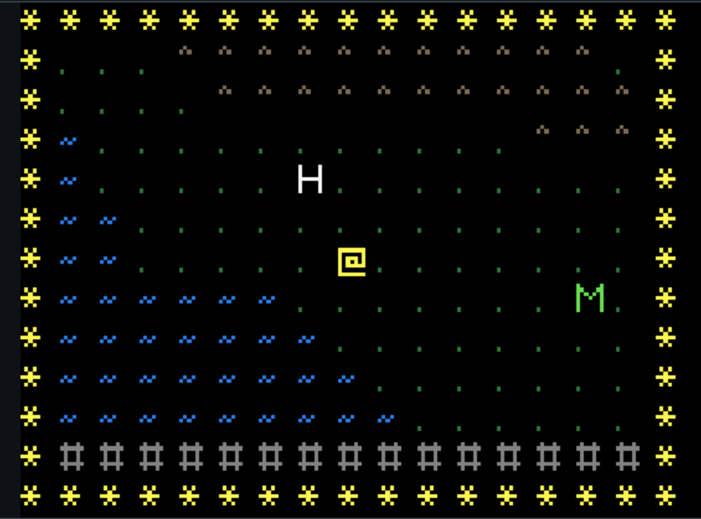
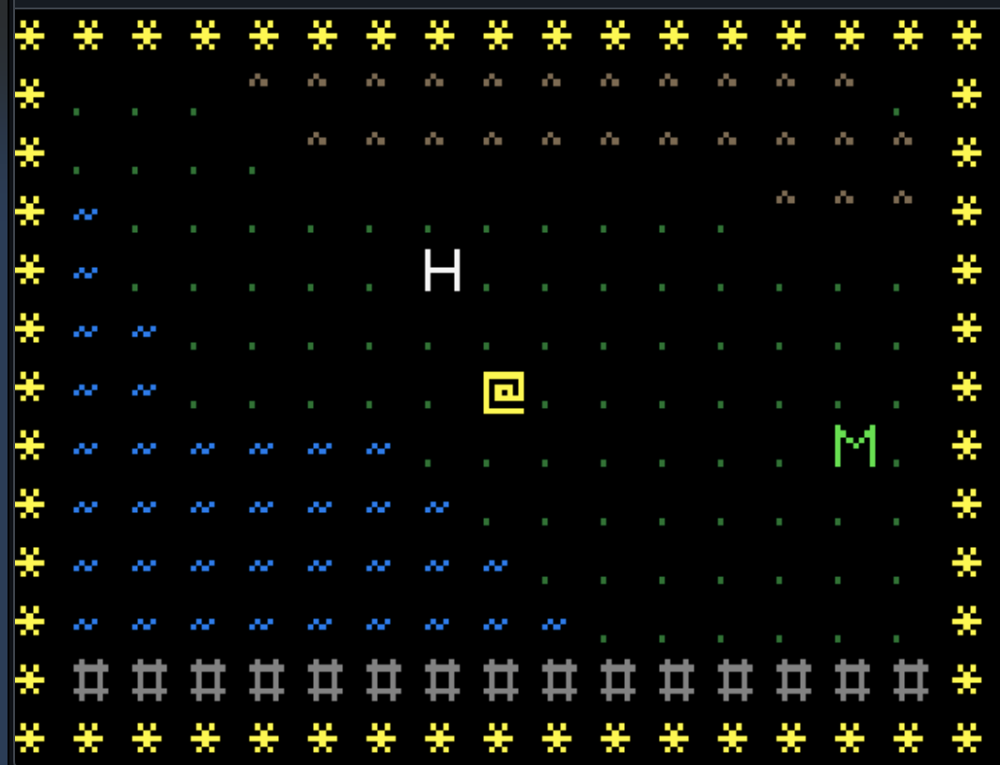
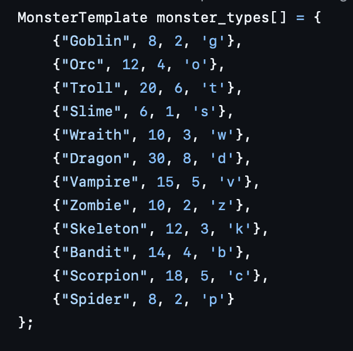
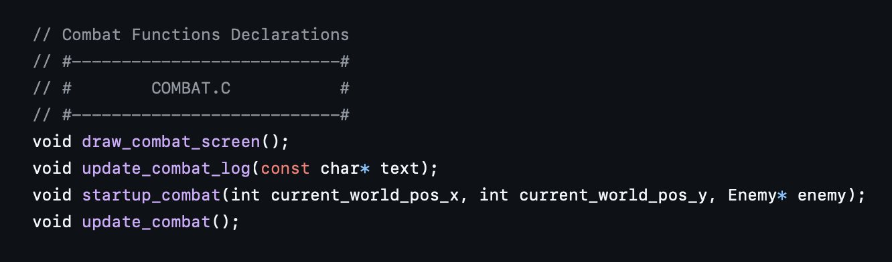
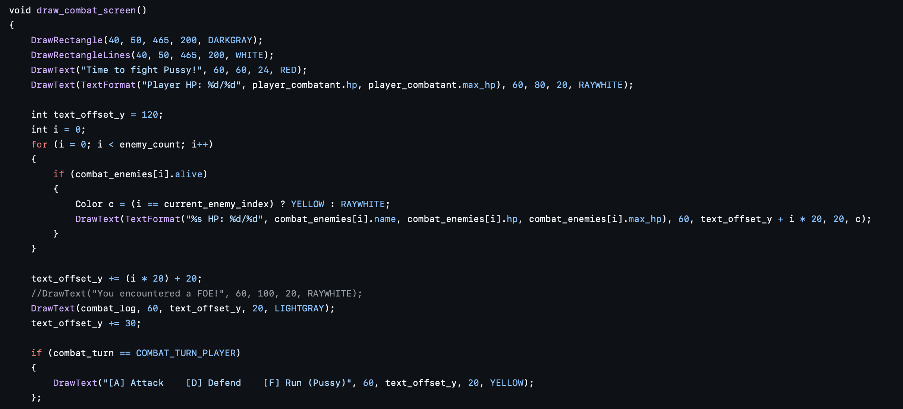
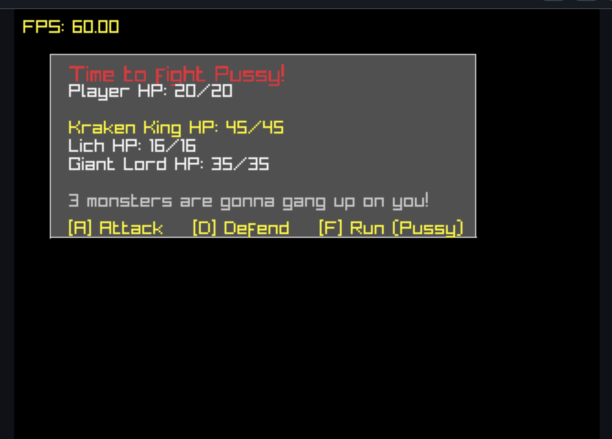

Recreational Programming: ASCII RPG
boot sequence initiated...
A briefing about a RPG in development. One I know you will want to play oh so badly
Recreational Programming: ASCII RPG
Proposed Agenda: I might not follow it exactly. I babble alot

- game.h A quick peek into this mess
- game.c Just a few comments about this
- combat.c This is the jinky combat engine
- maps.c Where you will find minor usage
- world.map :D this is the magic
GAME_H: A look into the madness
Digging in to the combat stuff

Let the profanity begin
Let me start by saying. This is not at all how I pictured the combat stuff to happen. Thats the beauty of this project. I have to limit myself and my creativity to actually get things working so I understand the project and can duplicate it. I also hope to extract the functionality into .o and .dll files so I can reuse them in other ascii games. I used to be able to draw and do art work but somewhere along the way I lost that. Its probably in a lonely sock drawer somewhere in some lame apartment somewhere. Not important.
If you look at the previous image above you will see that there are some letters H, @, and M. You might be saying "Fantastic, What does that mean?", I'm going to tell you. The H stands for Havasu. Which is a Southwestern city in Arizona that is HOT to say the least. Great place to visit. Has the London Bridge and a huge resort with a golden chariot in it. Fascinating. Thats not the point. The blue squigglies represent the lake. I did my best to stay true to the actual mapping of these areas. Did I succeed? I'm not a map maker any more than I can call myself a programmer yet. ANYWAY.... The @ symbol is the player and the M is the group of monsters that are just chilling by the lake somewhere just waiting for someone like you to come and ruin their day.
The Monsters
You are in for a treat......

Here is the thing.... In the main screenshot you will find below I have three monsters listed. Yes. I edited this list and those don't exist anymore. In fact I created 150 monsters and had a really good time doing it too. Its just one of those unmedicated things. When I have a chance to be creative I have to exercise restraint. Or this whole project will be nothing but monsters and I will get my dopamine high every single time I look at that list and I will add to it several times a day to keep it going. No bueno. So I practiced some discipline and I deleted a bunch of them and kept a few. I bet I even kept the original list in a text file somewhere just so I can relive the glory days. Where monsters were the baseline and heros just didn't die and only because the monsters enjoyed destroying them. ANYWAY... I didn't want monsters to begin with. I actually wanted to have this whole thing mission based but... I then realized I was intimidated by it and decided to quit being a baby about it.

In game.h..
I wanted to give an unobstructed view of what functions are in the combat.c file. First the most important. void draw_combat_screen();

Look at this beautiful function. Don't worry about the profanity. That is there for me not you. You can see the result below. First four lines are specific to the UI and Raylib. Its not very pretty. I do intend on making it look nicer. I want to make the dialogue box resemble either Windows 3.1 dialogue boxes or I might make it look like a whiptail interface. I don't know. I might even use Aesprite and make one that looks crappy but I can say its mine... ALL MINE.....
Next you will see a text offset variable. That is for the combat log to be formatted correctly, I find what I did to be sloppy and would like to really standardize the thing. The best way however, In my opinion. I bought some graph paper and going to design it on that medium and then calculate the offsets and blah blah blah there and put that into a dialogue graphic box lookup table or something. I bet there are way better ways. I could get really complicated and use Vector math to always calculate the positions based off the x,y position of the box and then it doesn't matter where the box is draw it will always be the same. DAMN IM GOOD!!! JK. For now. This will do until I get the game running the way I would like it too. Which means catching this blog up to the point of needing new content. :D.
Basially after that it looks at the current enemies that are alive and displays them on the screen. You can select which ones you attack and your HP is displayed on the screen. (This automagically heals after the battle and your health goes into the negaties right now. Yes negaties. You only have 20 health in the beginng. Bite me. Then it lists the three involved monsters and their corresponding HP. They do die however. This had to be done at this point in order to test the functionality of the battle. You can see that the game informs you that in fact 3 monsters are here to gang up on you. [A] You can attack... Which works well. I can't remember how the math is done right now and I will have to review that code too. (I'm still new at this and I didn't plan any of this and I will improve this process) [D] Defend. This literally does nothing but allow you to get hit. (As of now) So If you like getting hit then you are for sure going to like this one. (There is a method to this madness that I have in mind but not implemented yet) [F] Run... Yes you can run. The game will call you a pussy. That is literally there to discourage you from fighting enemies that are more powerful than you. I plan on punishing the player for that. I want you to fight to the death even if that means you. You will benefit more from being a badass.

Yep.....
Super simple
— root@WASecurity